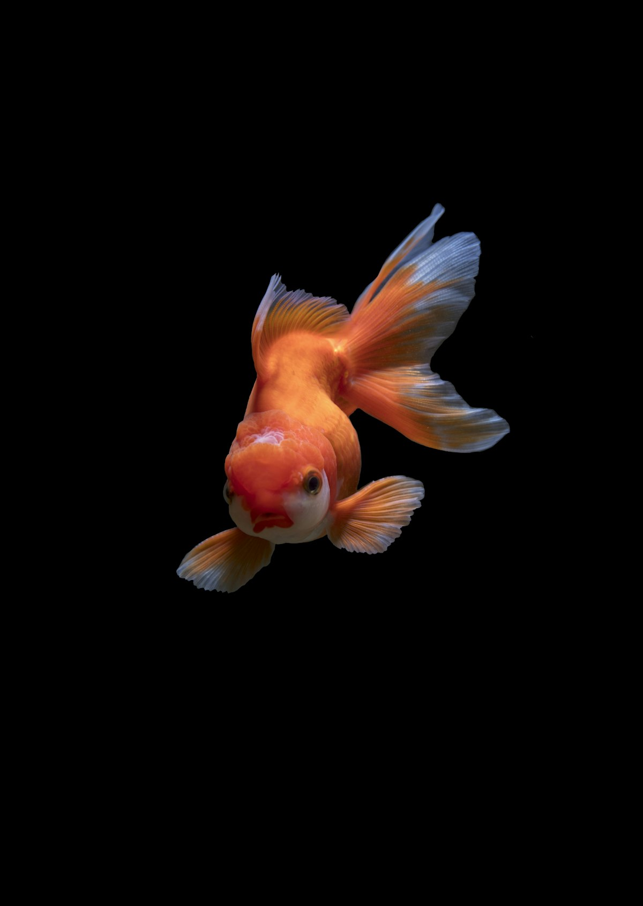
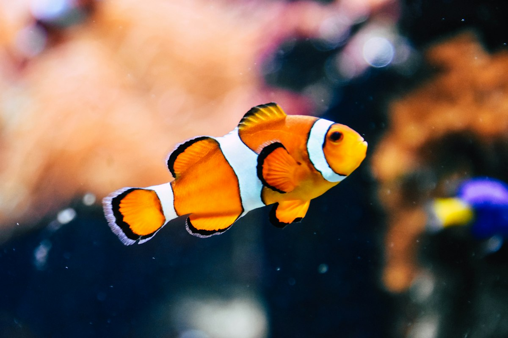
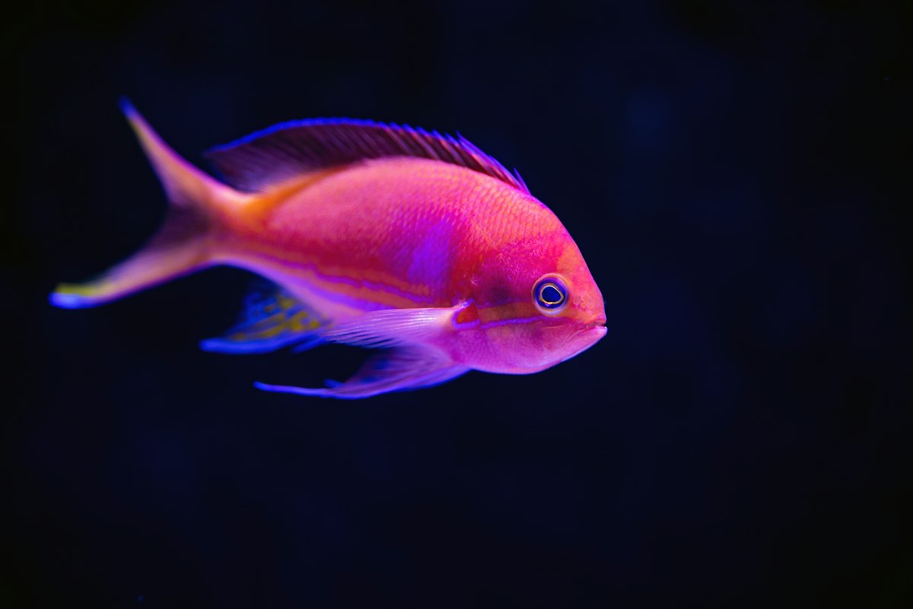
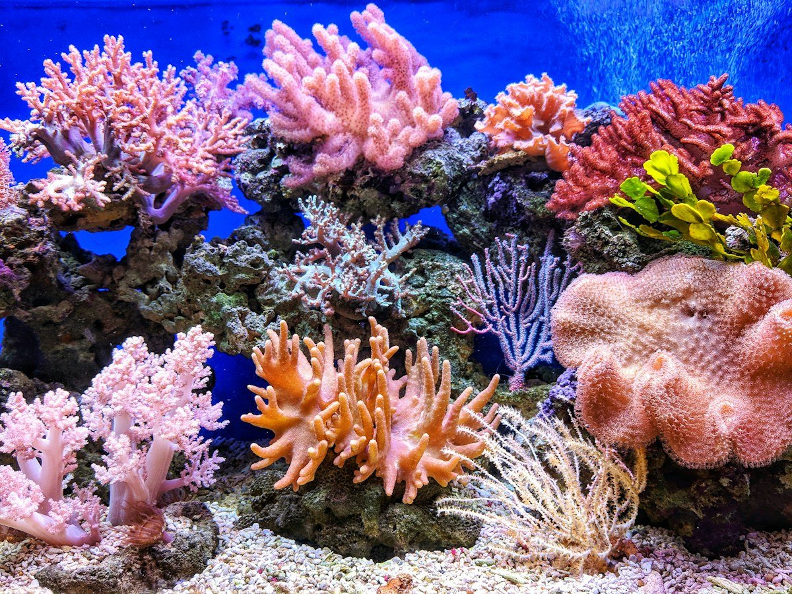

Consulta, vacunas, cirugía y cremación para tu mascota, más peces, accesorios y asesoría para tu acuario, todo en un solo lugar.
Dos mundos, un mismo lugar.
Perros, gatos y aves.
Calendario preventivo.
Procedimientos y estudios médicos.
Despedida digna para tu mascota.
Variedad de especies de agua dulce.
Peceras, filtros, bombas y decoración.
Alimento, ropa y accesorios.
Te ayudamos a montar tu acuario.
Un vistazo a nuestro mundo.



Fotografías de stock para la propuesta; se reemplazarán por fotos reales de la veterinaria y el acuario.
Todo para tu mascota, con o sin aletas.
En El Plecus combinamos atención veterinaria y una tienda completa con acuario. Explicamos cada diagnóstico con claridad y te asesoramos para el cuidado diario de perros, gatos, aves y peces.
Lo que valoran nuestros clientes.
“Me explicaron con claridad el diagnóstico y el tratamiento de mi perrita.”Reseña representativa
“Encuentras de todo: accesorios, ropa y cosas para el acuario en un solo lugar.”Reseña representativa
“Atendieron a mi periquito con mucho cariño; buen trato de todo el personal.”Reseña representativa
Reseñas representativas basadas en temas de opiniones públicas; se reemplazarán por reseñas reales.
Resolvemos tus dudas.
Lunes a viernes de 8:00 a 18:00 y sábado de 8:00 a 19:00; domingo cerrado.
Sí, tenemos peces, alimento, filtros, decoración y asesoría para montar y mantener tu acuario.
Consulta, vacunas, desparasitación, cirugías y análisis médicos para perros, gatos y aves.
Sí, contamos con servicio de cremación; pregúntanos por opciones y costos.
Sí, nuestra tienda tiene ropa, correas, juguetes y alimento.
Visítanos sobre Av. Nezahualcóyotl.
DirecciónAv. Nezahualcóyotl 180, esq. Local A1, Guadalupe, 56335 Chimalhuacán, Edo. Méx.
Teléfono / WhatsApp56 1192 0116
HorarioLun–Vie 8:00–18:00 · Sáb 8:00–19:00 · Dom cerrado